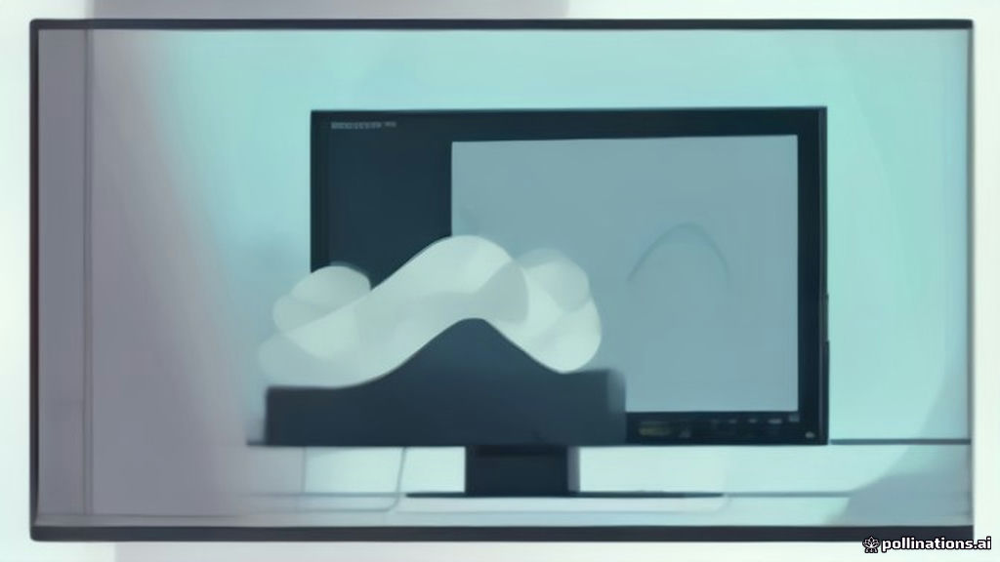

«30 FPS — это норма»: фанаты встали на защиту Rockstar за GTA 6
После свежего трейлера Grand Theft Auto 6 стало ясно: на современных консолях игра будет работать в режиме 30 кадров в секунду. В эпоху 60 FPS и выбора между качеством и производительностью блокбастер в 30 кадров мог бы показаться катастрофой. Однако эксперты и преданные фанаты взяли решение Rockstar под свою защиту. Кажется, теперь низкий фпс — это не баг, а философия. Готовимся наслаждаться кинотеатральной плавностью в городских приключениях.
Источник: habr.com ↗